グラフ基礎
目次
- 概要
- 最短経路問題
- オイラー路
- K-Coloring
概要
頂点と辺からなる抽象的なモデルをグラフといい、道路、ネットワーク、状態遷移図など、身近な物事のモデルとして使用されています。以下の図はシンプルな形のグラフです。
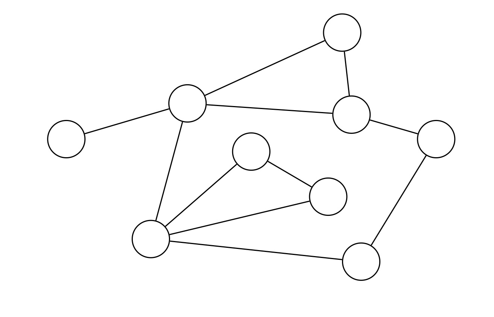
グラフの特徴
上記のグラフは重みを持たない頂点と無向辺のみからなり、かつ全ての頂点が連結で多重辺と自己ループが存在しないグラフです。一般のグラフにおいては、以下の場合もありえます。
-
連結でない場合 : 辺を辿って移動できない頂点対が存在する場合 -
辺が有向の場合 : 辺に始点と終点が定義される場合。経路の方向の意味を持つ。 -
多重辺が存在する場合 : 同じ頂点対を繋ぐ辺が複数存在する場合 -
自己ループがある場合 : 同じ頂点対を繋ぐ辺が存在する場合 -
頂点や辺に重みが存在する場合 : グラフをモデルとした数値計算などを行う場合
グラフの表現
グラフの最も基本的な定義では、頂点集合と辺集合を定義します。グラフをデータで管理するためには頂点を区別できる方が都合が良いため、グラフの頂点には番号を割り振ります。この頂点番号の集合を頂点集合 \(V\) とします。\(V\) は \(V = \{0,1,\dots,|V|-1\}\) だったり、\(V = \{1,\dots,|V|\}\) だったりします。また、辺集合 \(E\) は、辺の両端の頂点対 \((u-v)\) を元とする集合です。
グラフを表現するだけであれば上記をそのまま実装するだけなのですが、グラフ上で何かの処理を行う際は、今見ている頂点につながる辺を見る場面がほとんどです。このように、ある頂点につながる辺を管理するデータ構造として、隣接リストを利用します。隣接リストは以下で定義されます。
- \(\mathrm{G}[u] := \) 頂点 \(u\) を端点に持つ辺の情報の集合
ただし有向グラフの場合、上記の定義は「\(u\) を始点とする辺の情報の集合」になります。
最短経路問題
グラフ上で、同じ頂点を \(2\) 度以上通らない、辺で繋がれた一本道のことをパスと言います。パスが \(p\) 個の頂点を繋ぐ、すなわち \(p-1\) 本の辺から構成される場合、そのパスの長さは \(p-1\) です。
最短経路問題では、パスの長さが最も短いものを求めることもあれば、辺の重みの総和が最小のものを求めることなど、さまざまなバリエーションがあります。
幅優先探索 (BFS)
パスの始点を決めて、その他の頂点への最短経路長を求める問題を、単一始点最短経路問題と言います。ここでは、代表的なアルゴリズムである BFS(幅優先探索)を説明します。BFS では、始点からの最短経路長が同じ頂点を一つのクラスタとして手続きを行います。
黒の頂点がすでに調査済みの頂点で、赤の頂点は周辺を調査中のクラスタです。調査中のクラスタに隣接する頂点のうち、調査済みでないもの (緑の頂点) は、赤の頂点の最短経路長 \(+1\) が最短経路長になります。
そして重要な観点として、最短経路になる経路は、その道中も全て最短経路であるという観点が重要です。このアルゴリズムでは、現時点で分かっている経路長が小さいものから順に調査を行う手続きをとります。当たり前のことですが、BFS もその後紹介するアルゴリズムも、この観点があると理解が容易になります。
BFS のコード
// 始点
int start = 0;
// 最短経路長
std::vector<int> dist(N+1, N+2);
dist[start] = 0;
// クラスタを論理的に表現するキュー
std::queue<int> cluster;
cluster.push(start);
// 調査対象が無くなるまで、その周辺の頂点の最短経路長を調査する
while(!cluster.empty()){
int now = cluster.front();
cluster.pop();
// now に隣接する頂点を調査
for(auto nx : G[now]){
// すでに調査ずみならスキップ
if(dist[nx] <= dist[now] + 1)continue;
dist[nx] = dist[now] + 1;
cluster.push(nx);
}
}
この手続きでは、cluster キューの中に、最短経路長が同じ頂点群を保存して手続きを行います。最短経路長が \(X\) のクラスターの周辺を調査中の場合、cluster に保管されている頂点の最短経路長は、cluster 内の頂点の順に \(\{X,X,X,\dots,X, X+1,X+1,\dots,X+1\}\) になります。\(2\) つのクラスタに属する頂点が経路長が小さい順に cluster 保管されるため、上記のアルゴリズムが有効なのです。
ダイクストラ法
辺重みや頂点重みの総和を求める場合でも、単一始点最短経路問題を解くアルゴリズムが存在します。ここでは、最短経路長の代わりにパス上の重みの総和の最小値を求めます。ただし、重みは \(0\) 以上である場合に限定します。
実は、辺重みが \(0\) と \(1\) しかない場合は、先述の BFS と同様の手続きによって計算を行うことができます。BFS では、キューの末尾への push がアルゴリズムと相性が良かったわけです。辺重みが \(0\) と \(1\) しかない場合は、std::deque(デック) への push_front と push_back を用いることで、経路長の順に頂点を std::deque に格納することができます。
int start = 0;
std::vector<int> dist(N+1, N+2);
dist[start] = 0;
// クラスタを論理的に表現するキュー
std::deque<int> cluster;
cluster.push_front(start);
while(!cluster.empty()){
int now = cluster.front();
cluster.pop_front();
// now に隣接する頂点を調査
for(auto edge : G[now]){
const int nx = edge.first;
const int w = edge.second;
// すでに調査ずみならスキップ
if (dist[nx] <= dist[now] + w) continue;
dist[nx] = dist[now] + w;
if(w == 0)cluster.push_front(nx);
if(w == 1)cluster.push_back(nx);
}
}
閑話休題、ダイクストラ法もこれまで同様に現時点で分かっている経路長が小さいものから順に調査を行う手続きを行います。
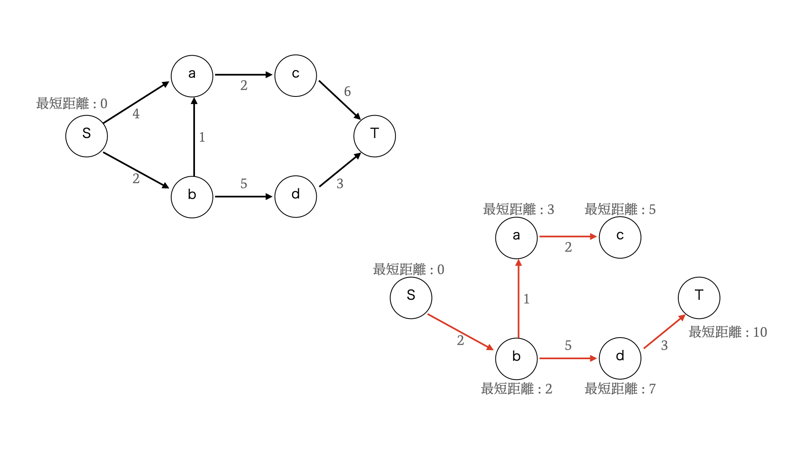
結論から述べると、優先度付きキュー (std::priority_queue) を用いることで、BFS と同様の手続きで計算を行うことができます。ただし、枝刈り (探索スキップ) を行う条件を間違えると計算量が悪化するので注意が必要です。
int start = 0;
std::vector<int> weight(N+1, N+2);
weight[start] = 0;
priority_queue<pair<int, int>, vector<pair<int, int>>, greater<pair<int, int>> > que;
que.emplace(start, weight[start]);
while(!que.empty()){
int now = que.top().first;
int d = que.top().second;
que.pop();
// すでに確定済みの場合
if (weight[now] < d)continue;
// now に隣接する頂点を調査
for(auto edge : G[now]){
const int nx = edge.first;
const int w = edge.second;
if (weight[nx] <= weight[now] + w) continue;
weight[nx] = weight[now] + w;
que.emplace(nx,weight[nx]);
}
}
条件付きの最短経路問題
一般のグラフに対する最短経路問題を用いて、以下の問題を考えてみましょう。
\(N\) 個の都市と \(M\) 本の下道があります。また、下道とは別に \(K\) 本の高速道路があります。
\(i\) 番目の下道は都市 \(u_i\) と都市 \(v_i\) を繋いでおり、移動するのに \(t_i\) 分かかります。\(i\) 番目の高速道路は都市 \(u_i\) と都市 \(v_i\) を繋いでおり、どの高速道路も移動するのに \(T\) 分かかります。
いずれの都市でも、下道から高速道路に切り替えるためには \(P\) 分待機する必要があり、高速道路から下道に切り替える際の待機時間はありません。また、下道から高速道路への切り替えは一度以下しか行えません。都市 \(1\) から都市 \(N\) への移動にかかる最短時間を計算してください。
この問題では、下道と高速道路の切り替えと、高速道路への切り替え回数が \(1\) 回までという部分を解決する必要があります。ここで、最短経路問題自体にこれらの条件を適用するのではなく、グラフの形をうまく変形して条件を表現することにします。その様子が以下の図です。
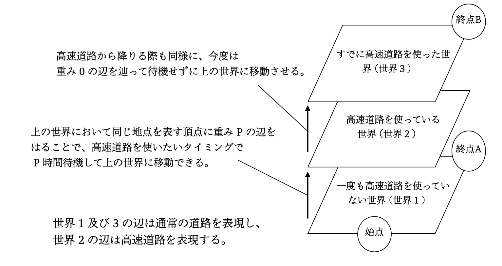
この図では、\(N\) 個の都市が存在する世界を \(3\) つに増やして、それぞれの世界に異なる状態を割り当てています。
-
世界 \(1\) : 動き始めに下道を利用する世界。\(N\) 個の頂点と、下道を表す辺のみが存在する。 -
世界 \(2\) : 高速道路に入った世界。\(N\) 個の頂点と、高速道路を表す辺のみが存在する。 -
世界 \(3\) : 高速道路を出た後に下道を利用する世界。\(N\) 個の頂点と、下道を表す辺のみが存在する。
世界 \(1\) の各都市からは、世界 \(2\) の同じ都市へ重み \(P\) の辺を貼り、世界 \(2\) の各都市からは、世界 \(3\) の同じ都市へ重み \(0\) の辺を貼ります。これが道路の切り替えを表しています。
もし、高速道路への切り替えを何度でも行って良い場合、世界の分け方は以下の図の通りになります。
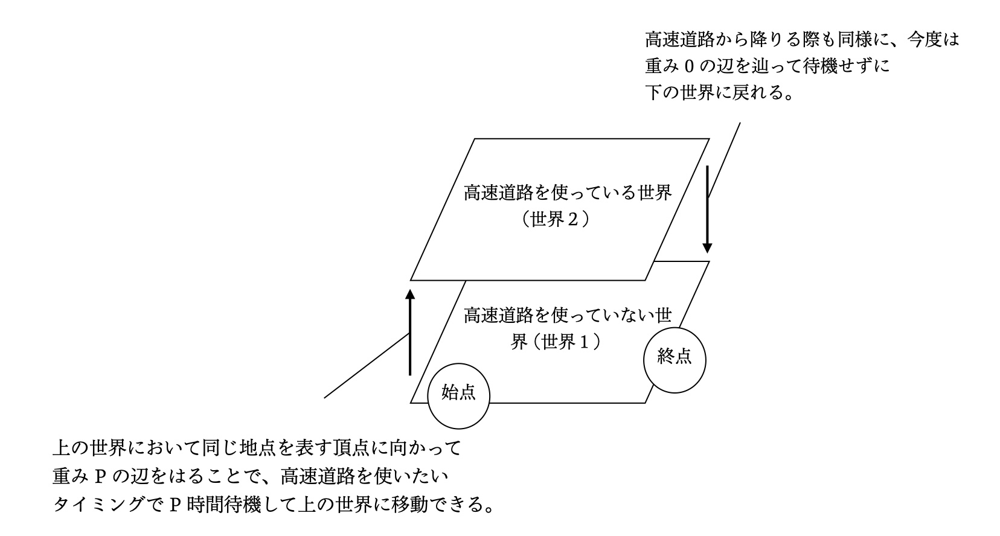
このように、特定の操作や条件をグラフの変形という形で表現することで、最短経路問題を適用することができるようになります。最後に同様の例を紹介します。以下の図は、これまでの話とは関係なく、頂点 \(X\) を通ることが条件となっている場合の最短経路問題を表現するグラフです。
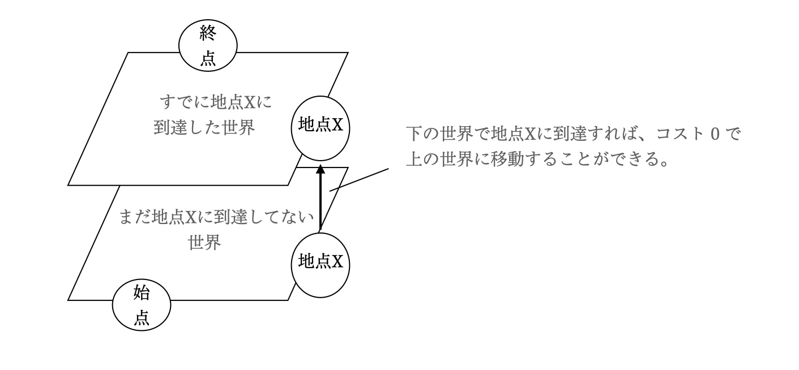
オイラー路
グラフの全ての辺をちょうど \(1\) 度だけ通る Walk のことを、オイラー路と言います。
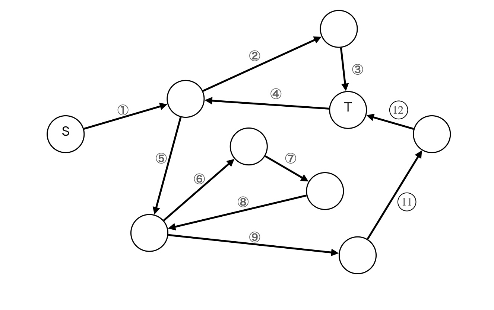
例えば、このグラフでのオイラー路の \(1\) つは以下のような Walk です。
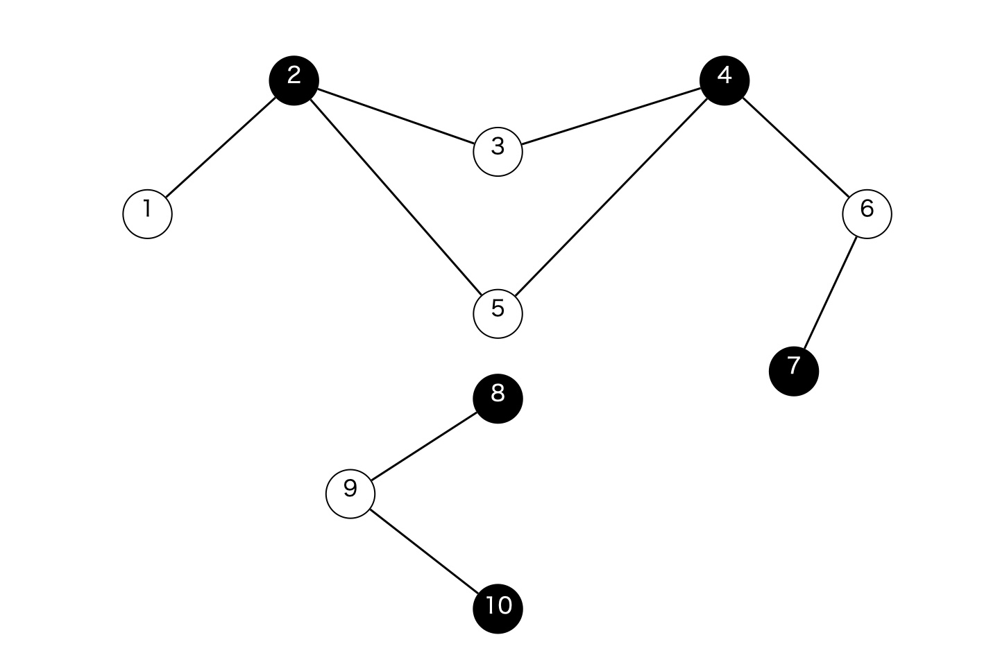
オイラー路が存在するための条件
大前提として、グラフが連結である必要があります。オイラー路が存在すると仮定した場合、オイラー路の始点と終点以外の頂点に注目してみます。それらの頂点は始点でも終点でもないので、その頂点に入ったら必ず出ることになり、頂点に 入る/出る が 1 セットになっているので、始点でも終点でもない頂点の次数は偶数であることがわかります。
次数が奇数になる頂点は 始点/終点 のみであり、始点と終点が同じ場合はそれらの次数も偶数になります。よって、オイラー路が存在する必要十分条件は、次数が奇数の頂点数が \(0\) または \(2\) であることです。
二部グラフと \(K\)-Coloring
辺で隣接する頂点が同じ色にならないようにグラフを K 色で塗り分けることを、\(K\) 彩色と言います。特にグラフが二部グラフであることは \(2\) 彩色可能であることの必要十分条件です。
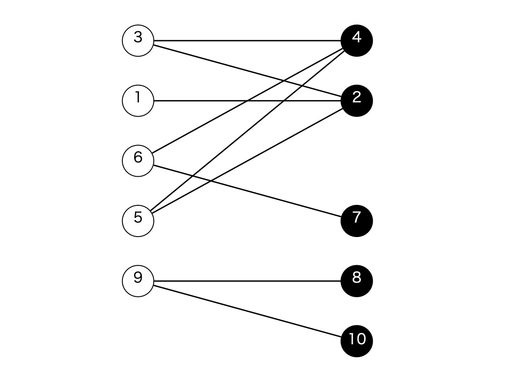
グラフが \(2\) 彩色可能かどうかの判定は、DFS によって \(O(N)\) 時間で可能です。グラフを色 \(1 , 2\) の \(2\) 色で塗り分けるものとし、初めに適当な頂点を色 \(1\) で塗ってそこから DFS しながら愚直に色を塗っていきます。
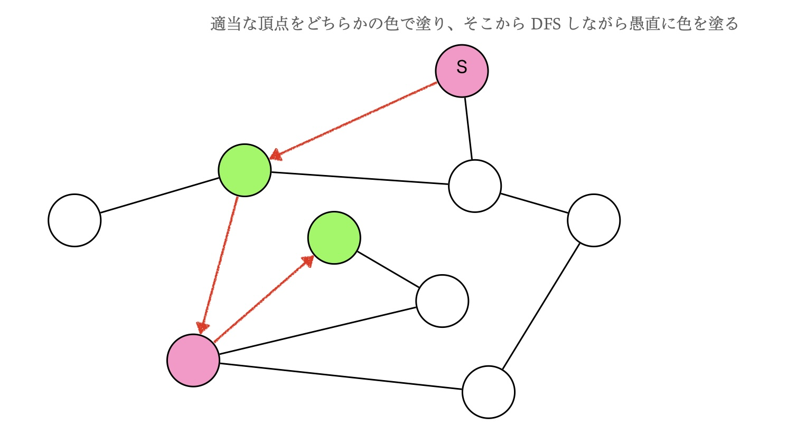
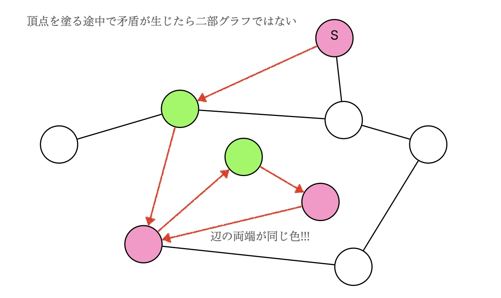
DFS の途中で矛盾 (隣接する頂点を同じ色で塗る) が発生した場合、そのグラフは \(2\) 彩色不可能なので二部グラフではありません。
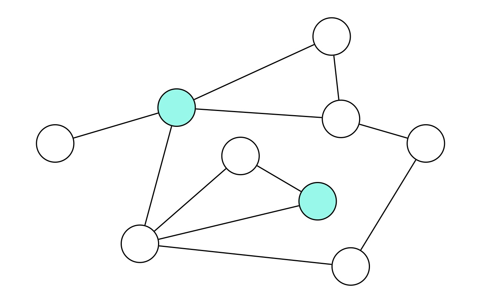
では \(3\) 彩色可能かどうかの判定はどうでしょうか。頂点を色 \(1,2,3\) で塗り分け可能かどうかは、ナイーヴなアルゴリズムによって \(O(N2^N)\) 時間で判定可能です。
まず頂点集合 \(S\) を決めて、頂点集合 \(S\) の頂点を色 \(1\) で塗ります。当然隣接する頂点同士を色 \(1\) で塗ることはできないので、\(S\) に属する頂点は互いに隣接しない必要があります。
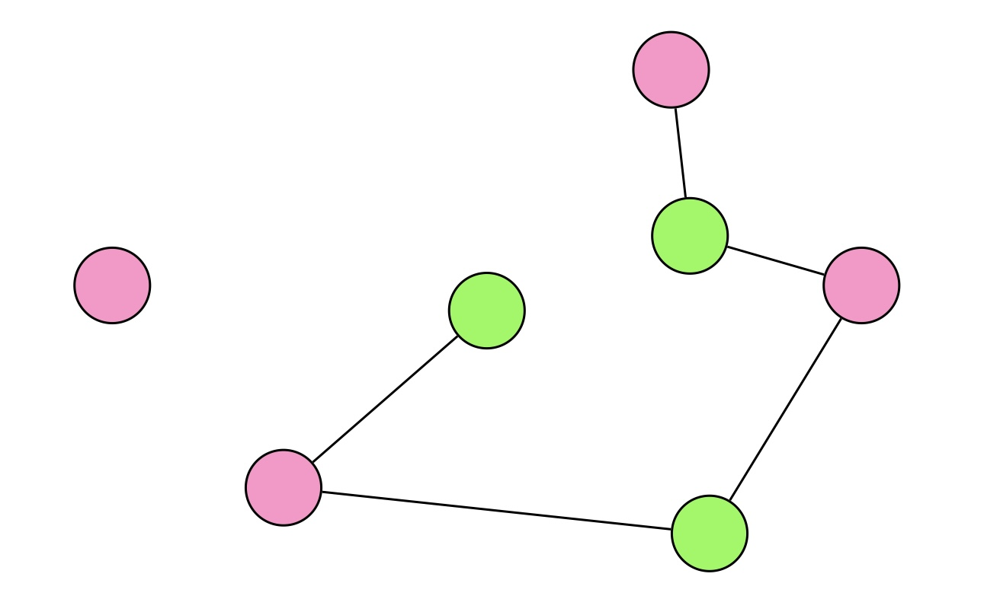
頂点集合 \(S\) に属さない頂点からなる誘導部分グラフが \(2\) 彩色可能なら、元のグラフは \(3\) 彩色可能と言えます。

頂点集合 \(S\) としてあり得るものを全て考えるのに \(O(2^N)\) 時間かかり、頂点集合 \(S\) それぞれに対して、二部グラフ判定などが \(O(N)\) 時間かかるので、このアルゴリズムは \(O(N2^N)\) 時間で動作します。
一般化して、\(K\)-Coloring には以下のナイーヴなアルゴリズムを適用することができます。
- 色 \(1\) で塗る頂点集合 \(S\) を決める。
- \(S\) 以外の頂点からなる誘導部分グラフが \(K-1\) 彩色可能なら、元のグラフは \(K\) 彩色可能である。
以下は与えられたグラフ (隣接リスト) を \(3\) 色以内で塗り分ける方法の総数を求めるコード例です。
int main(){
int N,M;cin >> N >> M ;
vector<vector<int> > G(N);
while(M-->0){
int u , v;cin >> u >> v;
u--;v--;
G[u].push_back(v);
G[v].push_back(u);
}
long long ans = 0;
// 色 1 で塗る頂点集合 s を全探索
for(int s = 0 ; s < (1<<N) ; s++){
// s 以外の頂点が二部グラフかどうかを調べる
// 二部グラフなら、連結成分ごとに 2 通りの塗り方があるので、
// s に対して 2^(連結成分の個数) 通りの塗り方がある
long long ccc = 0; // (Connected Component Count)
vector<int> color(N,0);// [x] := 頂点 x の色 (0 = まだ見てない)
for(int x = 0 ; x < N ; x++)if((1<<x)&s)color[x]=1;// s に属する頂点を色 1 で塗る
// 隣接する頂点を両方とも 1 で塗ることはできない
for(int x = 0 ; x < N ; x++)for(int y : G[x])if(color[x] == 1 && color[y] == 1)ccc = NINF;
for(int x = 0 ; x < N ; x++){
if(color[x] != 0)continue; // すでに見た頂点の場合
ccc++;// 連結成分数をカウント
stack<int> st;
st.push(x);
color[x] = 2; // 頂点 x を 2 で塗ると仮定する
while(!st.empty()){
int now = st.top();
st.pop();
int C = color[now];// 今いる頂点の色
for(int nx : G[now]){
if(color[nx] == 0){
color[nx] = (C==2) ? 3 : 2;
st.push(nx);
}else if(color[nx] == C)ccc = NINF;
// すでに自分と同じ色が塗られてたら二部グラフではないので NG
}
}
}
if(ccc>=0)ans+=(1ll<<ccc);
}
cout << ans << endl;
return 0;